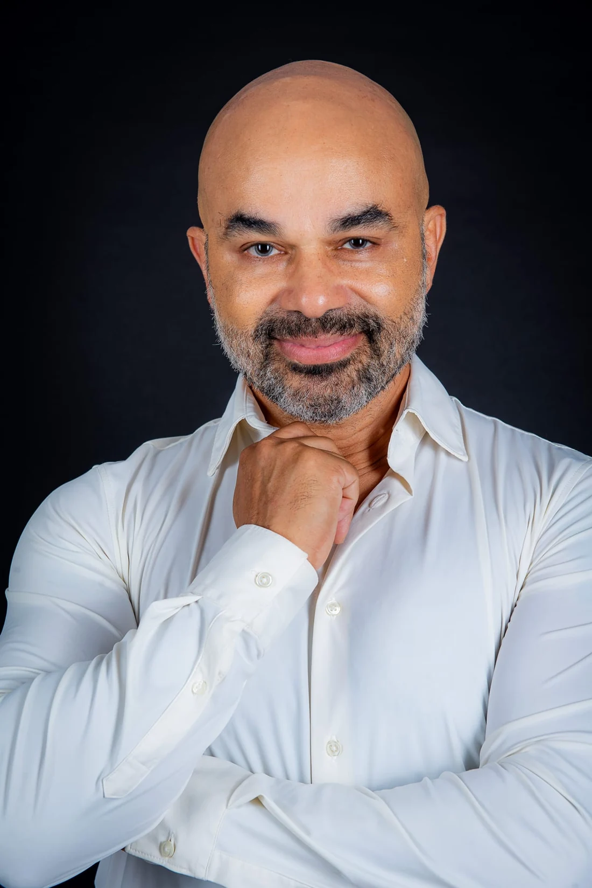
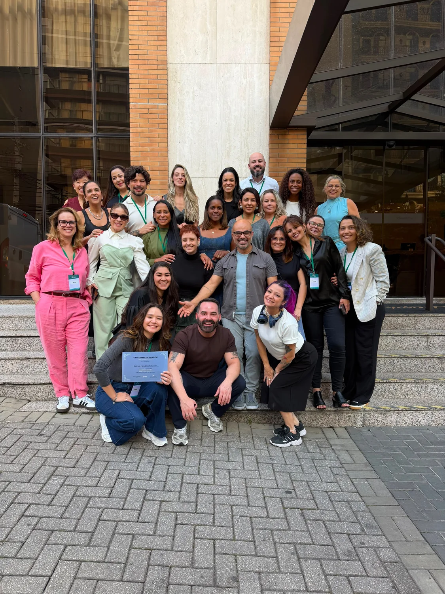
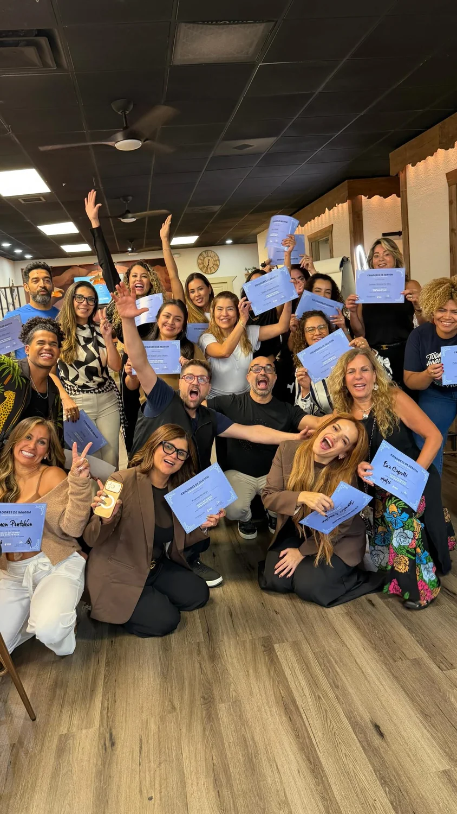
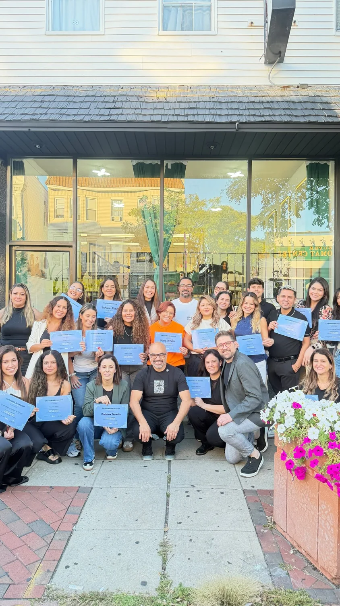

Renato Fuzz · Educação em cortes
Técnica que vira identidade.
Da intenção à forma. Um novo olhar para o corte e para o profissional que você quer ser.
Mais de 18 mil alunos.Conhecimento que conecta profissionais.

no seu olhar.RENATO FUZZ / EDUCADOR
Linha, graduação, camadas. Educação em movimento.
- 18.000alunos formados
- 12 paísesna trajetória do educador
- 3 fundamentosum universo de possibilidades
Escolha a sua próxima experiência
O universo
Renato Fuzz.
Quatro caminhos. Uma vontade em comum: continuar evoluindo.
01 / O raciocínio por trás da tesoura
Antes da forma,
o fundamento.
Cada escolha muda o desenho. Explore os três fundamentos que orientam o método do Renato.
A base do desenho
Onde a forma começa.
O perímetro organiza o contorno e o peso. É a primeira decisão na construção do desenho.
Toque nos fundamentos para explorar.
O método é o começo.
A sua assinatura vem depois.
02 / Olhar de quem cria
A técnica encontra
a personalidade.
Textura, contorno e movimento. Diferentes produções do portfólio para observar de perto.
Textura e contorno.
Ondas e diferentes comprimentos revelam o desenho do cabelo.
Observar. Decidir. Construir.
O corte ganha vida na prática.

O conhecimento ganha encontro.Imersão presencial / Renato Fuzz
Esteja onde
o corte acontece.
O olhar atento, a troca de perto, a experiência de estar junto. Uma imersão para dar espaço à sua evolução profissional.
Consultar imersões e cidadesVeja datas e disponibilidade na programação oficial.Criadores de Imagem / Comunidade
Seu talento
não precisa
caminhar sozinho.
Uma conexão que continua além de um encontro. Explore o ambiente de educação do Criadores de Imagem e encontre novas formas de aprender e trocar.
Conhecer a comunidadeGENTE / TÉCNICA / CONEXÃO

Conteúdo gratuito / Criadores de Imagem
Dê play no seu
próximo nível.
Veja o Renato em ação. Escolha uma aula, observe os detalhes e leve novas perguntas para a sua prática.
04 / Renato Fuzz
A experiência
vira conhecimento.
Especialista em cortes, fundador da Fuzz Cabeleireiros e cofundador do Criadores de Imagem. Renato conecta a vivência de salão à educação de outros profissionais.
Uma trajetória que atravessa países, salas de aula e diferentes formas de pensar o cabelo.
- Técnica com raciocínio.
- Trocas que atravessam fronteiras.
- Educação que segue em movimento.
abrir novos olhares.RENATO FUZZ / EM AULA
05 / Conhecimento compartilhado
O aprendizado
aproxima.
Registros de encontros e turmas. Gente que se reúne para trocar, praticar e continuar aprendendo.
Deslize para explorar · Toque para ampliar
Conexões que ficam.
Um encontro de profissionais.
Aprender junto.
Registros de uma turma reunida.
Compartilhar a jornada.
Educação e troca em grupo.
06 / Antes de seguir
Encontre
seu ponto de partida.
É uma formação para começar do zero?
O Expert em Cortes é apresentado no site oficial como especialização para profissionais que já cortam. Confira a proposta e os requisitos do formato escolhido antes de se inscrever.
Onde vejo as próximas imersões?
O botão Presencial leva à página oficial do Renato. Consulte por lá as próximas cidades, datas e disponibilidade.
Qual a diferença entre Expert e comunidade?
O Expert apresenta o caminho de estudo em cortes. A comunidade leva ao ambiente do Criadores de Imagem. Cada página oficial detalha o acesso e a proposta correspondente.
Consigo conhecer o conteúdo antes?
Sim. O canal Criadores de Imagem no YouTube reúne conteúdo público. Você pode começar por lá e conhecer a forma de ensinar.
Os botões já fazem uma inscrição?
Os botões abrem os canais oficiais. A escolha de turma e a inscrição são feitas no destino, conforme as condições disponíveis.
O seu próximo capítulo